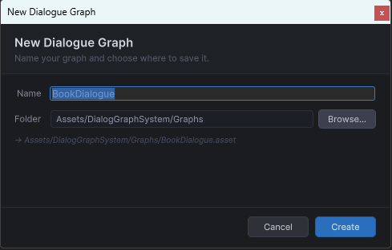

Guide: Creating a Dialog
Create a branching conversation that can be started by dialogID.
Workflow
- Open
Tools → Dialogue Graph System → Dialogue Graph. - Create a new graph.
- Add nodes and connect them.
- Save the graph.
- Add it to
DialogManager.dialogGraphs. - Start it from gameplay code.
Example starter script
using DialogSystem.Runtime.Core;
using UnityEngine;
public class TavernNpc : MonoBehaviour
{
public void Talk()
{
DialogManager.Instance.PlayDialogByID("tavern_npc_intro");
}
}Validation checklist
Starthas an outgoing link- every choice option has a valid target
- the
dialogIDmapping exists in the manager - the scene has a working UI panel
New graph dialog

The creation prompt where you name the graph asset and set its dialog ID.